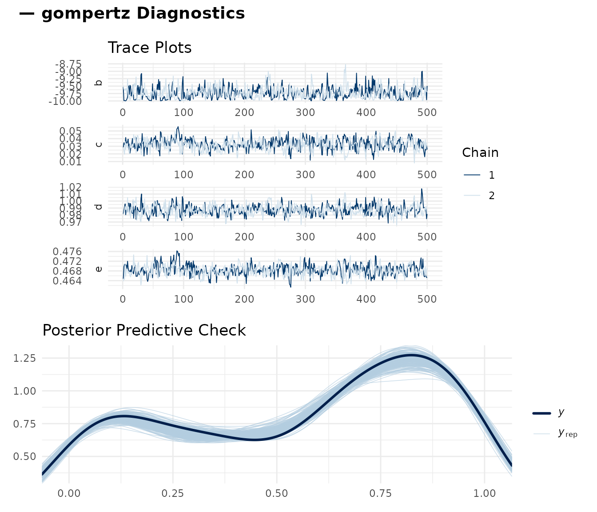
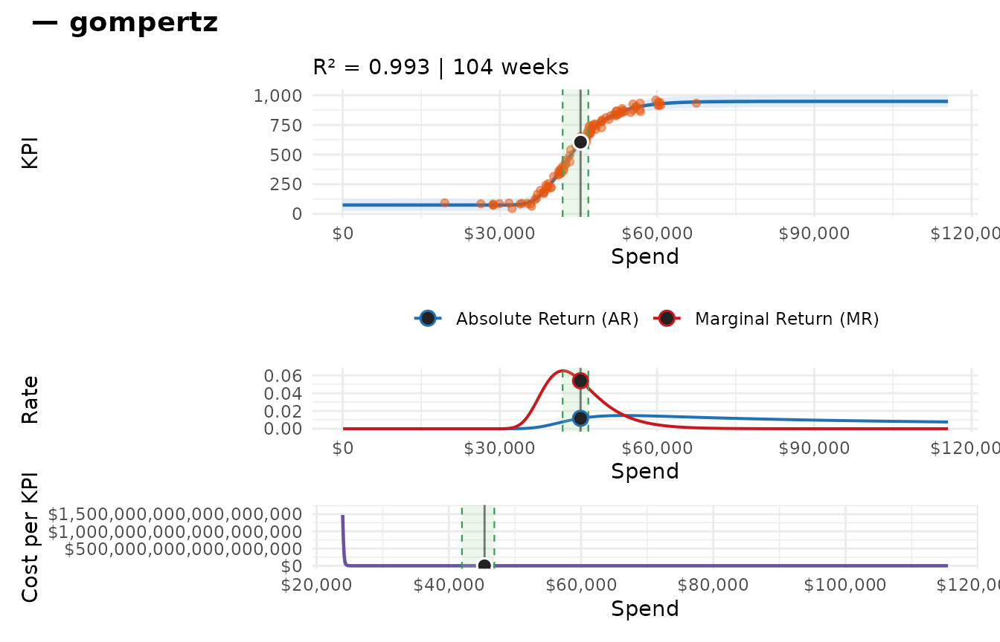
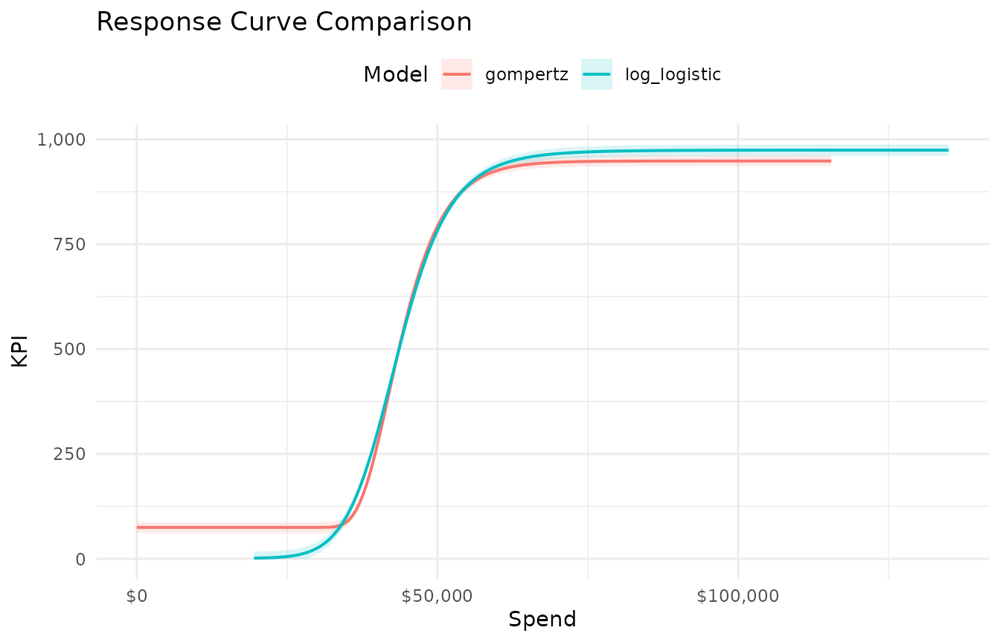
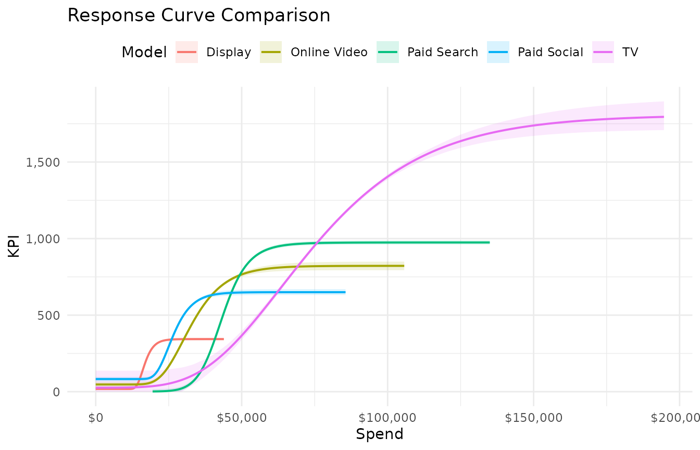
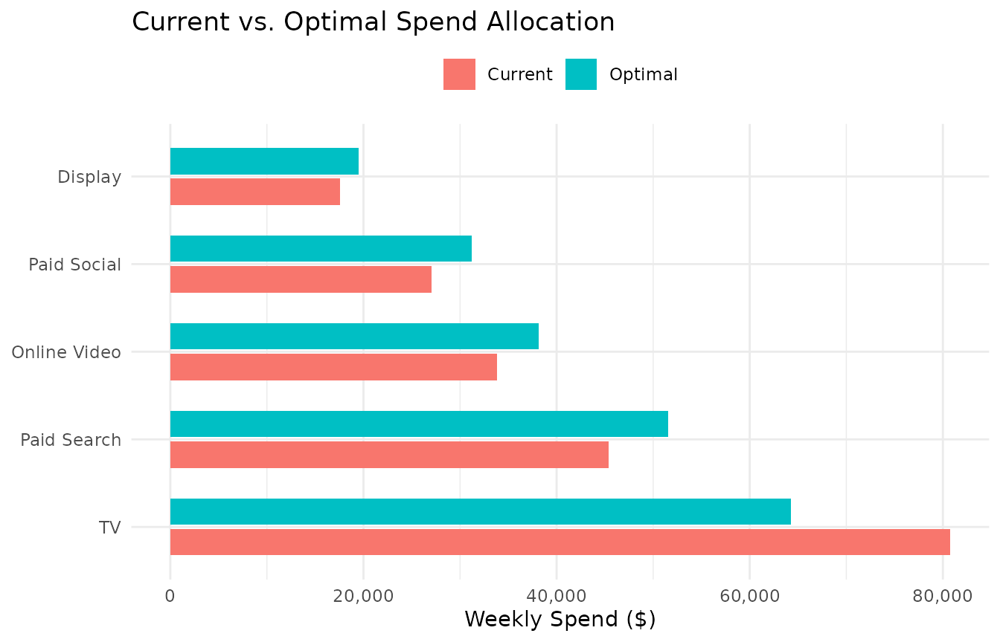
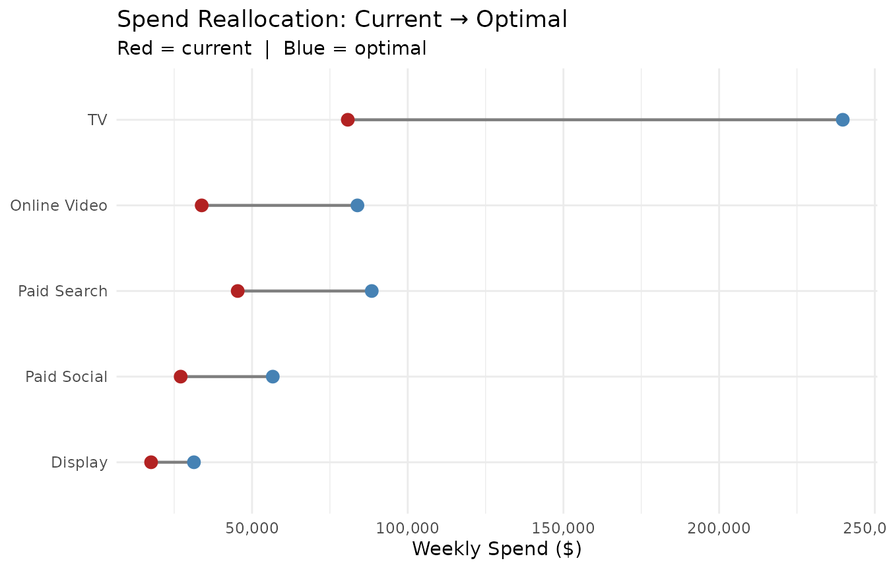
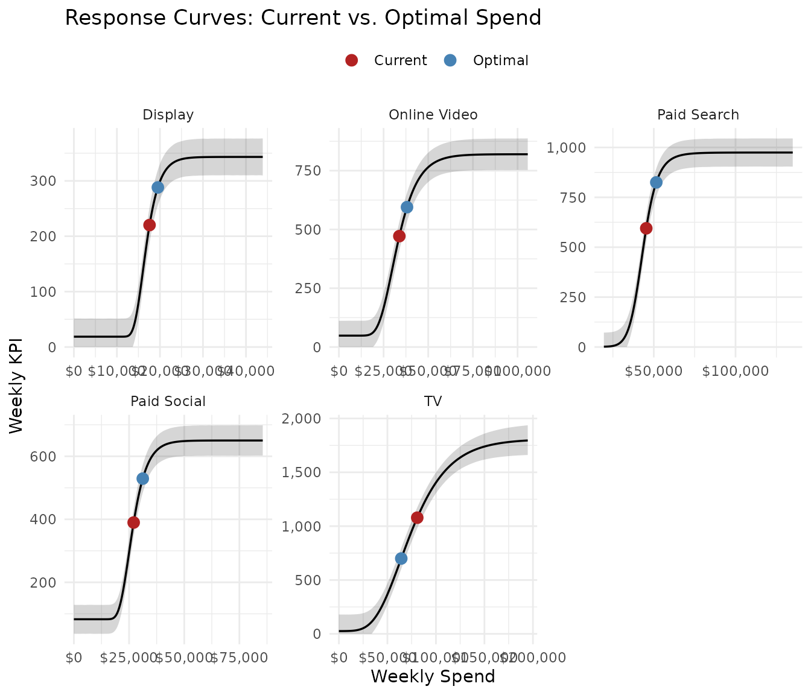
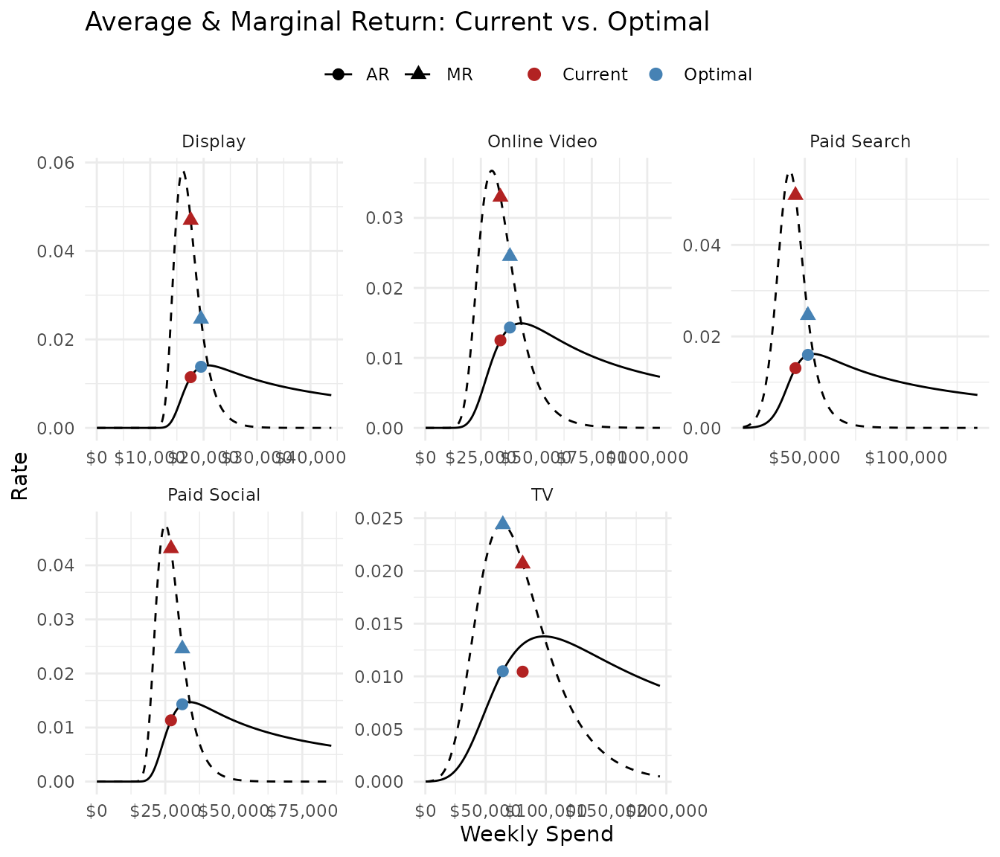
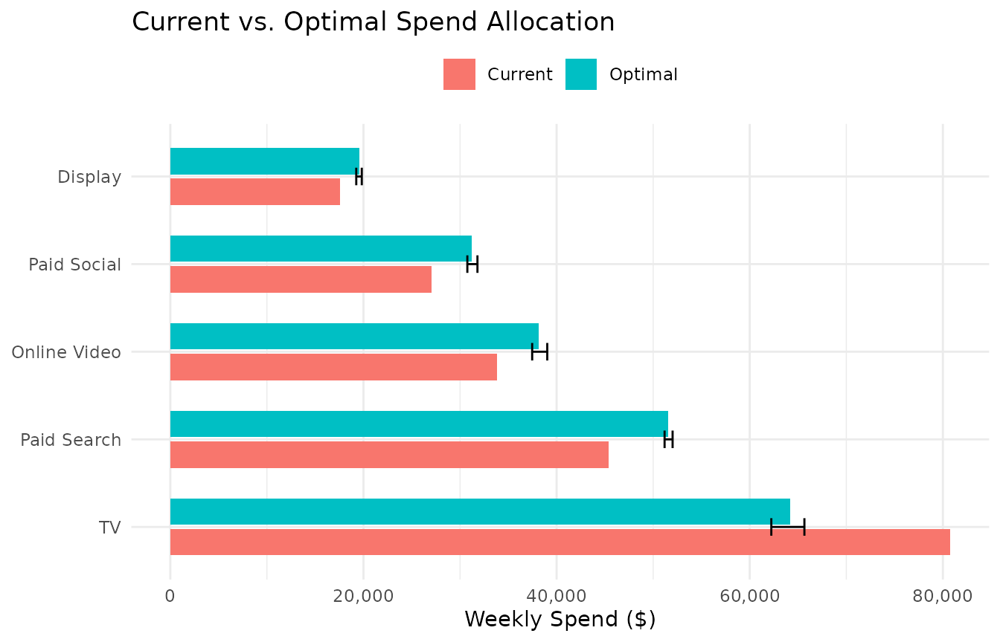
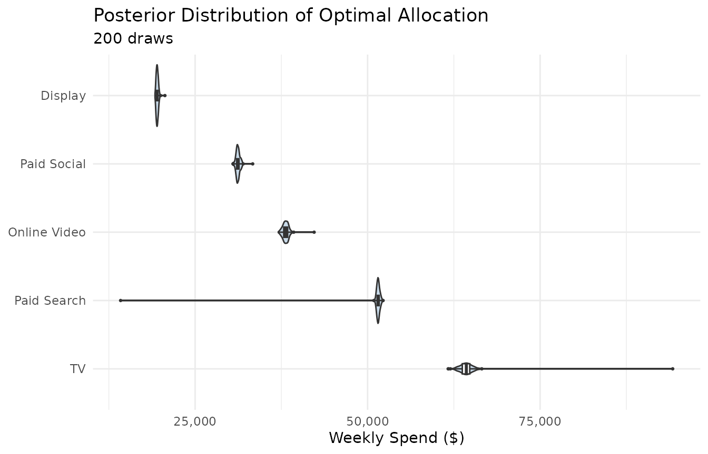

Getting Started
getting_started.RmdThis vignette walks through the full mrmopt workflow
from raw data to an optimized media allocation, using the built-in
mrmopt_data dataset. By the end you will have fit response
curves for five channels, compared curve types, checked diagnostics, and
produced a budget optimization with uncertainty.
Where mrmopt sits in the analytics stack
mrmopt is a response curve and optimization
layer. It takes weekly spend and attributed KPI data by channel
— the kind of output produced by an upstream Media Mix Model or
Multi-Touch Attribution model — and adds three things the upstream model
typically doesn’t provide:
- Nonlinear saturation curves — explicitly modeling diminishing returns rather than assuming a linear relationship between spend and KPI
- Bayesian uncertainty — credible intervals on curves, marginal returns, and cost-per-unit that honestly reflect what the data does and doesn’t tell you
- Uncertainty-aware optimization — budget allocation that accounts for parameter uncertainty rather than optimizing against a single point estimate
mrmopt does not replace a joint MMM. It operates
downstream of one.
The workflow
Every analysis in mrmopt follows the same iterative
loop:
Raw data
└─► fit_response() # Fit one channel, one curve type
└─► mrm_plot_diagnostics() # Check convergence
└─► mrms_plot_compare() # Compare curve types
└─► fit_response() # Best type, full iterations, all channels
└─► opt_mix() # Optimize the portfolio
└─► opt_summary() / opt_plot_*()The two loops — convergence checking and curve type selection — are the parts new users most often skip. Skipping them produces unreliable curves and misleading optimization results. This vignette shows you what to look for at each step.
The data
mrmopt_data is a built-in dataset with five media
channels, each with 104 weeks (two years) of weekly spend and attributed
conversions.
data(mrmopt_data)
mrmopt_data
#> # A tibble: 520 × 4
#> channel week spend conversions
#> <fct> <date> <dbl> <int>
#> 1 Paid Search 2023-01-02 46306 616
#> 2 Paid Search 2023-01-09 38396 171
#> 3 Paid Search 2023-01-16 41434 334
#> 4 Paid Search 2023-01-23 46644 687
#> 5 Paid Search 2023-01-30 37157 166
#> 6 Paid Search 2023-02-06 47482 716
#> 7 Paid Search 2023-02-13 32331 45
#> 8 Paid Search 2023-02-20 28702 83
#> 9 Paid Search 2023-02-27 47682 739
#> 10 Paid Search 2023-03-06 48444 743
#> # ℹ 510 more rows
mrmopt_data |>
group_by(channel) |>
summarise(
weeks = n(),
total_spend = sum(spend),
total_conv = sum(conversions),
avg_wk_spend = mean(spend),
avg_wk_conv = mean(conversions)
)
#> # A tibble: 5 × 6
#> channel weeks total_spend total_conv avg_wk_spend avg_wk_conv
#> <fct> <int> <dbl> <int> <dbl> <dbl>
#> 1 Paid Search 104 4721083 57188 45395. 550.
#> 2 Paid Social 104 2816528 38719 27082 372.
#> 3 Display 104 1828456 20339 17581. 196.
#> 4 Online Video 104 3518235 45789 33829. 440.
#> 5 TV 104 8398316 107985 80753. 1038.Required format: One row per channel-week. At
minimum you need date, spend, and
kpi columns. An optional units column
(impressions, GRPs, clicks) unlocks cost-per-unit metrics. Channels are
modeled one at a time — filter to a single channel before calling
fit_response().
Step 1: Fit a response curve
Start with one channel and one curve type. Gompertz is a reasonable default for channels with concave diminishing returns from the start.
ps_data <- mrmopt_data |> filter(channel == "Paid Search")
fit_ps <- fit_response(
data = ps_data,
spend = "spend",
kpi = "conversions",
date = "week",
type = "gompertz",
midpoint_range = c(0.1, 0.5),
ceiling_max = 3
)fit_response() fits a Bayesian nonlinear model using
Stan via brms. midpoint_range and
ceiling_max are scale-invariant prior controls — you do not
need to specify raw Stan priors unless you want to.
Step 2: Read the output
print() gives a five-section summary of the fitted
model:
print(fit_ps)
#> -- Response Curve Summary: gompertz ------------------------------------------
#> Channel: spend
#> Weeks: 104
#> -- Current Performance -------------------------------------------------------
#> Weekly Spend: $45,395
#> KPI: 605 | CP: $77 | AR: 0.0117 | MR: 0.0539
#> -- Parameters ----------------------------------------------------------------
#> b (growth rate): -2.03e-04
#> c (floor): 75
#> d (ceiling): 948
#> e (midpoint): $41,970
#> -- Response Curve Summary ----------------------------------------------------
#> Min (peak MR): $41,976 -> KPI: 397 | CP: $106
#> Peak (peak AR): $53,797 -> KPI: 872 | CP: $62
#> Max (70% MR): $46,877 -> KPI: 678 | CP: $69
#>
#> 33.7% of weeks below range | 22.1% in range | 44.2% above range
#> -- Bayes R2 ------------------------------------------------------------------
#> R2: 0.9930 (95% CI: [0.9925, 0.9932])
#>
#> Use summary(x) for brms model diagnostics.Reading this top to bottom:
- Response Curve Summary — the curve type and the channel/KPI columns used
- Current Performance — where the channel sits right now: weekly spend, KPI, cost-per-conversion, average return (AR), and marginal return (MR)
-
Parameters — the four fitted curve parameters.
d(ceiling) ande(midpoint) are the most interpretable: ceiling is the maximum predicted KPI, midpoint is the spend level where the curve is steepest - Response Curve Summary — three reference points on the curve anchored to MR multiples, helping you see how much room is left to grow and how quickly returns are declining
- Bayes R² — a posterior distribution of explained variance. Higher is better; values below 0.4 suggest the curve may not be well-identified from this data
mrm_params() gives a focused table of just the four
parameters:
mrm_params(fit_ps)
#> # A tibble: 4 × 6
#> param name description center lower upper
#> <chr> <chr> <chr> <dbl> <dbl> <dbl>
#> 1 b Growth Rate Controls how quickly the curve r… -2.03e-4 -2.08e-4 -1.93e-4
#> 2 c Floor Baseline KPI level at zero spend… 7.49e+1 6.09e+1 8.80e+1
#> 3 d Ceiling Maximum achievable KPI at satura… 9.48e+2 9.36e+2 9.62e+2
#> 4 e Midpoint Spend level at the inflection po… 4.20e+4 4.17e+4 4.22e+4Step 3: Check diagnostics
Before interpreting anything, confirm the model converged.
mrm_plot_diagnostics(fit_ps)
Two things to check:
- Trace plots — four chains should mix freely (overlap completely, no trends or drifts). If chains are separating or stuck, the model has convergence problems.
- Posterior predictive check — the blue posterior draws should envelope the black observed data line. A systematic gap means the curve form is misspecified.
The numerical indicators to target are Rhat ≤ 1.01
and Bulk ESS > 400 for all parameters. These are
printed in mrm_summary():
mrm_summary(fit_ps)
#> -- Response Curve Summary: gompertz ------------------------------------------
#> Channel: spend
#> Weeks: 104
#> -- Current Performance -------------------------------------------------------
#> Weekly Spend: $45,395
#> KPI: 605 | CP: $77 | AR: 0.0117 | MR: 0.0539
#> -- Parameters ----------------------------------------------------------------
#> b (growth rate): -2.03e-04
#> c (floor): 75
#> d (ceiling): 948
#> e (midpoint): $41,970
#> -- Response Curve Summary ----------------------------------------------------
#> Min (peak MR): $41,976 -> KPI: 397 | CP: $106
#> Peak (peak AR): $53,797 -> KPI: 872 | CP: $62
#> Max (70% MR): $46,877 -> KPI: 678 | CP: $69
#>
#> 33.7% of weeks below range | 22.1% in range | 44.2% above range
#> -- Bayes R2 ------------------------------------------------------------------
#> R2: 0.9930 (95% CI: [0.9925, 0.9932])If convergence is poor, try increasing iter and
warmup, or adjust the priors with a tighter
midpoint_range.
Step 4: Visualize the response curve
Once convergence is confirmed, look at the curve itself:
mrm_plot(fit_ps)
This dashboard shows three panels:
- Response curve — KPI vs. spend with posterior credible band. The current operating point is marked.
- Average & marginal return — AR and MR curves. Where MR is well below AR, the channel is in the diminishing returns zone. Where MR ≈ AR, it is underinvested.
- Cost-per — cost-per-conversion across the spend range. Flat or declining cost-per means the channel absorbs more spend efficiently.
Step 5: Compare curve types
mrmopt supports six curve forms. The right choice
depends on the data — some channels have S-shaped response (low returns
at very low spend, peak efficiency in the middle, diminishing returns at
high spend) while others show concave diminishing returns from the first
dollar.
Fit a second type and compare them visually:
fit_ps_ll <- fit_response(
data = ps_data,
spend = "spend",
kpi = "conversions",
date = "week",
type = "log_logistic",
midpoint_range = c(0.1, 0.5),
ceiling_max = 3
)
mrms_plot_compare(
list(gompertz = fit_ps, log_logistic = fit_ps_ll),
interval = "confidence"
)
Prefer the curve that:
- Has tighter credible bands (better identified from the data)
- Has higher Bayes R²
- Shows no systematic gap between the predictive band and the data in the diagnostic PPC
For a full comparison across all six types, see the Diagnostics & Comparison vignette.
Step 6: Fit all channels
Once you have a curve type for each channel, fit the full portfolio.
Here we use the best-fit type for each of the five channels in
mrmopt_data:
channel_types <- list(
"Paid Search" = "log_logistic",
"Paid Social" = "gompertz",
"Display" = "gompertz",
"Online Video" = "gompertz",
"TV" = "gompertz"
)
fits <- lapply(names(channel_types), function(ch) {
fit_response(
data = mrmopt_data |> filter(channel == ch),
spend = "spend",
kpi = "conversions",
date = "week",
type = channel_types[[ch]],
midpoint_range = c(0.1, 0.5),
ceiling_max = 3
)
})
names(fits) <- names(channel_types)Compare all five on the same axes to get an immediate sense of relative efficiency:
mrms_plot_compare(fits, interval = "confidence")
Step 7: Optimize the portfolio
opt_mix() finds the spend allocation that maximizes
total KPI subject to a total budget constraint. The default
method = "point" uses the posterior median parameters and
runs in under a second:
opt <- opt_mix(fits, budget = 500000)opt_summary() prints a formatted allocation table:
opt_summary(opt)
#> -- Optimization Result (point) -----------------------------------------------
#> Budget: $500,000/week | Channels: 5
#> -- Optimal Allocation --------------------------------------------------------
#> Channel Weekly Spend Weekly KPI CP Share
#> Paid Social $56,658 649 $87 11.3%
#> Paid Search $88,440 974 $91 17.7%
#> Display $31,340 343 $91 6.3%
#> Online Video $83,847 819 $102 16.8%
#> TV $239,714 1,805 $133 47.9%
#> -- Totals --------------------------------------------------------------------
#> Optimal: Spend $500,000 | KPI 4,590 | Avg CP $109
#> Current: Spend $204,641 | KPI 2,755 | Avg CP $74
#> Change: KPI +66.6% | CP +$35Reading the output:
- Weekly Spend — the optimal spend per channel at the given budget
- Weekly KPI — predicted conversions at the optimal spend
- CP — cost-per-conversion at the optimal point
- Share — share of total budget
- Totals — current vs. optimal KPI and cost-per, with the overall change
opt_table() returns the same information as a tidy
tibble for further analysis or reporting:
opt_table(opt) |>
select(channel, current_spend, optimal_spend, spend_delta_pct,
current_kpi, optimal_kpi, kpi_delta_pct, cp_delta)
#> # A tibble: 6 × 8
#> channel current_spend optimal_spend spend_delta_pct current_kpi optimal_kpi
#> <chr> <dbl> <dbl> <dbl> <dbl> <dbl>
#> 1 Paid Soci… 27082 56658. 1.09 390. 649.
#> 2 Paid Sear… 45395. 88440. 0.948 595. 974.
#> 3 Display 17581. 31340. 0.783 220. 343.
#> 4 Online Vi… 33829. 83847. 1.48 471. 819.
#> 5 TV 80753. 239714. 1.97 1079. 1805.
#> 6 TOTAL 204641. 500000 1.44 2755. 4590.
#> # ℹ 2 more variables: kpi_delta_pct <dbl>, cp_delta <dbl>Step 8: Visualize the allocation
Two plot functions cover the most common views:
opt_plot_allocation(opt)
opt_plot_comparison(opt)
To see exactly where the optimal spend falls on each channel’s response curve:
opt_plot_curves(opt)
And on the marginal return curves — the view that shows why the optimizer moved spend the way it did:
opt_plot_returns(opt)
Step 9: Add uncertainty with posterior optimization
The point estimate result is fast but treats the posterior median
parameters as if they were known exactly.
method = "posterior" runs the optimizer over a sample of
posterior draws, producing a distribution of optimal allocations:
opt_post <- opt_mix(fits, budget = 500000, method = "posterior", n_draws = 200)
opt_summary(opt_post)
#> -- Optimization Result (posterior, 200 draws) --------------------------------
#> Budget: $500,000/week | Channels: 5
#> -- Optimal Allocation --------------------------------------------------------
#> Channel Weekly Spend [95% CI] CP Share
#> Paid Social $56,619 [$53,563 – $59,648] $87 +11.3%
#> Paid Search $88,544 [$84,073 – $92,560] $91 +17.7%
#> Display $31,306 [$29,942 – $33,019] $91 +6.3%
#> Online Video $84,140 [$78,764 – $89,270] $103 +16.8%
#> TV $239,233 [$229,601 – $250,468] $133 +47.9%
#> -- Totals --------------------------------------------------------------------
#> Optimal: Spend $499,841 | KPI 4,582 | Avg CP $109
#> Current: Spend $204,641 | KPI 2,755 | Avg CP $74
#> Change: KPI +66.3% | CP +$35The [95% CI] column shows the range of optimal spend
across draws. opt_plot_allocation() adds error bars:
opt_plot_allocation(opt_post)
And opt_plot_posterior() shows the full spend
distribution per channel:
opt_plot_posterior(opt_post)
Wide distributions signal channels where the data does not strongly constrain the curve — the optimizer is uncertain about where to put spend because the response is uncertain. Narrow distributions signal well-identified channels where the allocation decision is robust.
Scenario analysis
opt_mix() supports several common scenario needs:
Period budgets — optimize a quarterly or annual budget broken into weekly allocations:
opt_annual <- opt_mix(fits, budget = 26000000, n_weeks = 52)Custom constraints — set channel-level floors, ceilings, and share bounds:
constraints <- data.frame(
channel = names(fits),
min_spend = c(10000, 5000, 2000, 5000, 50000),
max_spend = c(200000, 150000, 50000, 100000, 300000)
)
opt_constrained <- opt_mix(fits, budget = 500000, constraints = constraints)See the Optimization vignette for the full constraint specification including share bounds and fixed channels.
Where to go next
| Topic | Vignette |
|---|---|
Prior specification, mrm_prior(), and curve types in
depth |
Fitting & Analysis |
| Convergence diagnostics, PPC, and comparing models across time periods | Diagnostics & Comparison |
| Constraints, posterior optimization, and scenario planning | Optimization |
| Mathematical derivations of all six curve forms | Response Curve Theory |